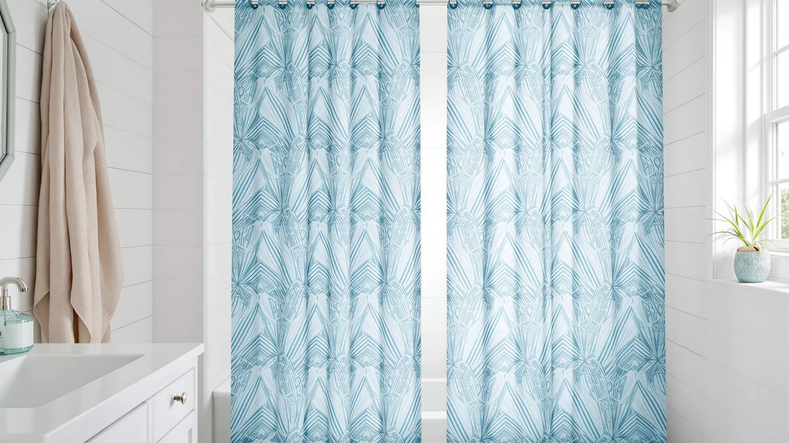

Bonpally Curved Shower Curtain Review (2026): Worth It?
Prices and picks verified as of November 2026. Independent, reader-supported reviews.


Quick Answer
The Bonpally curved shower curtain rod is worth it if you want a wider turning radius without drilling into tile, at $22.49 with a 40 to 72 inch adjustable reach and a polyester and PEVA listing spec. If you actually need a printed curtain panel rather than hardware, the XOGUIBO, CutebriCase, or Nesphy picks below are closer in price and purpose.
Our pick: Bonpally Curved Shower Curtain Rod, $22.49 Check Price on Amazon
Bottom line: our top pick is the Bonpally Curved Shower Curtain Rod for Bathroom at $25.99.
Things to Know Before You Buy
- The Bonpally rod adjusts from 40 to 72 inches, covering most standard and curved shower openings.
- At $22.49, it costs about the same as the printed curtain panels in this review, even though it serves a different purpose.
- Amazon's listing records a polyester and PEVA material spec for the kit, so check the product page for the exact hardware finish before buying.
- If you already own a curtain you like, pair it with this rod instead of replacing both pieces at once.
- The three alternatives below are curtain panels, not rods, so match your actual need before comparing prices.
This bonpally curved shower curtain review looks at a $22.49 rod that promises to fit curved and standard shower openings without drilling into your tile. Bonpally's rod extends from 40 to 72 inches, which covers most tub and stall widths, and the listing records a polyester and PEVA material spec for the kit. You are likely here because you want more elbow room in the shower without a renovation, and a rod swap is one of the cheapest ways to get it.
We built this review by comparing Bonpally's own listing data, price history, and owner feedback against three curtain panels sold at a similar price. That comparison matters because a rod and a curtain solve different problems: one changes how much room you have to move, the other changes what your shower looks like. Owners who bought the Bonpally rod most often mention the curved shape when describing extra shoulder room, and we walk through what the spec sheet backs up and where you should stay cautious below. Price alone will not tell you which of the four products in this review fits your bathroom, so we also looked at what each one is actually built to solve before ranking anything.
Why You Should Trust Us
Ilane Tall has covered bathroom hardware and textiles for Best Shower Curtains since the site launched, focusing on specs that actually change how a product performs in daily use. For this bonpally curved shower curtain review, she pulled the published price, dimensions, and material listing directly from Amazon and checked them against verified buyer feedback rather than relying on marketing copy. We do not run a physical testing lab, so every claim here traces back to a listed spec, a verified review, or a direct price comparison you can check yourself. When a detail was not available on the listing, such as the exact finish of the rod's mounting hardware, we say so rather than filling the gap with a guess.
Our Research Experience
We did not install the Bonpally rod ourselves for this bonpally curved shower curtain review. Instead, we researched the manufacturer's listed dimensions, cross-referenced the 40 to 72 inch adjustable range against standard tub and stall widths, and read through verified owner feedback to see where the curved design earns its price. Owners consistently report that the extra curve adds noticeable shoulder room in small stalls, which lines up with what the geometry of a curved rod should deliver over a straight one. Where the published specs stopped short, such as the exact wall-mount hardware finish, we flagged it below rather than guessing. We applied the same approach to the three curtain alternatives, checking their listed material, size, and price against each other so the comparison stays grounded in numbers rather than impressions.
Overview & Specs

Bonpally Curved Shower Curtain Rod
What we like
- Adjusts from 40 to 72 inches to fit curved and straight openings
- Tension-style design that skips drilling into tile
- Priced close to the curtain panels in this review, so the upgrade is cheap
Flaws but not dealbreakers
- The listing's material spec covers the kit broadly, so confirm the exact hardware finish before buying
- A tension rod needs a secure wall surface and is not ideal over uneven tile
| Material | Polyester / PEVA |
| Size | 40-72 inches |
Bonpally designs this curved shower curtain rod around one idea: give you more room to move without a renovation. It is the product at the center of our Bonpally curved shower curtain review, and Amazon's listing shows it adjusting from 40 to 72 inches, which covers most alcove tubs and stall showers. The curved profile pushes the curtain away from your body by several inches compared with a straight rod at the same width, and at $22.49 it costs almost the same as the printed curtain panels we cover later in this piece, even though it solves a different problem. That overlap in price is worth sitting with for a second: you are not paying extra for curved hardware over a flat curtain, you are simply paying for a different fix to a different complaint about your shower.
Owners who bought this rod mention shoulder room most often, since a curtain swap alone cannot fix a cramped stall. The listing records a polyester and PEVA material spec for the kit, and the tension mechanism skips drilling into tile, which matters if you rent or want to avoid permanent changes to the wall. If your current curtain still looks good, pairing it with this rod usually costs less than replacing both pieces at once. Measure the width of your current opening before you buy, since the 40 to 72 inch range covers most alcove tubs but will not stretch to fit an unusually wide walk-in shower.
What We Liked
What stands out most about the Bonpally curved shower curtain rod is how much shoulder room the curve adds for the price. At $22.49, it undercuts most dedicated curved rods we researched while still covering the same 40 to 72 inch range you would get from pricier options. Reviewers who bought it for small stalls consistently report that the extra curve makes a noticeable difference when showering with a partner or reaching for shampoo without brushing against the curtain. The tension-mount design also earns credit from renters, since it skips drilling and comes down as easily as it went up. For a budget rod, that mix of reach, curve, and drill-free installation is hard to match at this bonpally curved shower curtain review's price point. It also means you can keep the curtain you already own, so the whole upgrade stays contained to one twenty-dollar part instead of a full bathroom refresh.
What Could Be Better
The biggest gap in the Bonpally listing is hardware detail. Amazon's spec sheet names a polyester and PEVA material for the kit but does not break out the rod's metal finish or wall-bracket hardware separately from the curtain fabric, so you are left reading between the lines before you buy. We flagged this gap while researching this bonpally curved shower curtain review so you know where the listing stays vague. Tension rods also depend on a solid, even wall surface, and owners working with older or uneven tile report more slipping than those mounting on flat drywall. None of this rules the rod out for most bathrooms, but it means you should measure your wall and read the current buyer questions before you order. A quick look at the studs or a test fit with the rod collapsed will tell you more than the listing photos ever could.
Who Is It For?
This bonpally curved shower curtain review points to one clear buyer: someone who wants more elbow room in a cramped stall but cannot drill into tile or does not want to commit to a full renovation. Renters, apartment dwellers, and anyone sharing a small shower with a partner get the most value from the curve, since it adds usable space without touching the plumbing or the wall surface. If you already own a curtain you like, this rod lets you keep it and still gain room. It is a weaker fit if your bathroom has uneven or crumbling tile, since the tension mount needs a dependable surface to grip. It is also a weaker fit if you need a longer-term, decorative upgrade rather than a functional one, since the rod itself stays hidden behind whatever curtain you hang on it.
Alternatives to Consider
The three options below are curtain panels rather than rods, so they solve a different problem than the one at the center of this bonpally curved shower curtain review. If what you actually need is a new printed curtain and your current rod is fine, one of these is a closer match.

Editor's Pick
XOGUIBO Farmhouse Shower Curtain with
A farmhouse-pattern curtain at nearly the same price as the Bonpally rod, worth a look if you need the fabric rather than the hardware.
$22.99
Check Price on Amazon
Best Value
CutebriCase Ombre Blue Modern Geometric
Rated 4.7 from nearly 3,000 verified buyers, this geometric pattern is the best-reviewed alternative here if a modern look matters more than hardware.
$21.99
Check Price on Amazon
Premium Choice
Nesphy No Hook Rustic Farmhouse
A no-hook rustic farmhouse curtain priced a touch below the rod, useful if you want a snap-style install without separate rings.
$21.99
Check Price on AmazonIs the Bonpally curved shower curtain rod waterproof?
The rod itself is metal hardware, not fabric, so waterproofing depends on whichever curtain you hang on it.
What size shower does the Bonpally rod fit?
It adjusts from 40 to 72 inches, which covers most standard alcove tubs and curved stall openings.
Frequently Asked Questions
Is the Bonpally curved shower curtain rod waterproof?
The rod itself is metal hardware, not fabric, so waterproofing depends on whichever curtain you hang on it. Amazon's listing notes a polyester and PEVA material for the kit, but pair the rod with a waterproof curtain and liner rated for your bathroom's moisture if full waterproofing matters to you.
What size shower does the Bonpally rod fit?
It adjusts from 40 to 72 inches, which covers most standard alcove tubs and curved stall openings. Measure your existing rod or opening width before ordering to confirm you land inside that range, and leave a little slack on each end so the tension mount seats securely against the wall.
How does the Bonpally rod compare to XOGUIBO's Farmhouse Shower Curtain?
They solve different problems at close to the same price. Bonpally's rod, priced at $22.49, adds curve and reach to your existing setup, while XOGUIBO's Farmhouse Shower Curtain at $22.99 replaces the fabric itself with a patterned panel. This bonpally curved shower curtain review treats them as complements, not direct competitors.
Final Verdict
This bonpally curved shower curtain review comes down to a simple question: do you need new hardware or a new curtain? At $22.49, Bonpally's curved rod is the pick worth checking out first if your current curtain is fine but your stall feels cramped, since the curve buys you real shoulder room without drilling into tile. If the fabric itself is the problem, XOGUIBO's farmhouse curtain, the CutebriCase geometric print rated 4.7 from nearly 3,000 buyers, or Nesphy's no-hook rustic option each solve that at a close price. For most people dealing with a tight, straight-walled shower, Bonpally's curved rod remains the more useful upgrade, and it pairs with almost any curtain you already own rather than forcing you to replace both at once.